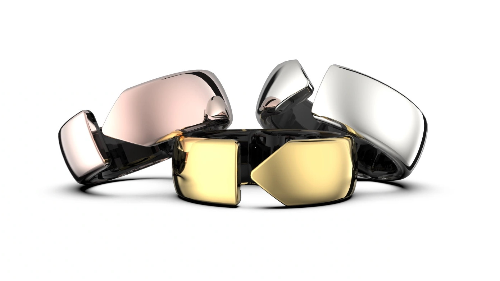

Movano Evie Ring es un anillo inteligente con un diseño sencillo que posee un conjunto de mecanismos capaces de enlazarse con el teléfono móvil. La idea de este anillo surgió por la compañía de tecnología estadounidense Movano. Esta empresa está muy centrada en la salud. Este anillo estaba previsto que estuviera a la venta en Estados Unidos en septiembre, pero al final saldrá a la venta en el mes de noviembre con un coste de 269 dólares. La empresa quería sacarlo, aunque no recibiera la aprobación de la FDA (Agencia del Departamento de Salud y Servicios Humanos de Estados Unidos) aunque al final fue inspeccionado por esta. Movano presentó una petición que comprobaba la exactitud de los sensores de frecuencia cardíaca y SpO2 de este.
El estudio realizado en colaboración con la Universidad de California en San Francisco (USCF), dijo que el margen de error de SpO2 es del 2%. Otro estudio dijo que tenía que tener una precisión de 1 BPM. Estos casos sobrepasan los requisitos mínimos de la FDA.
CARACTERÍSTICAS
Este anillo es capaz de realizar una serie de funciones muy importantes para nuestra salud y bienestar. Entre ellas está controlar el ritmo cardiaco, medir nuestra respiración, controlar la temperatura de la piel, número de pasos y número de calorías quemadas. Es capaz de controlar la salud del sueño e incluso hacer monitorizar el estado emocional. Otra de las labores que podrá desarrollar es hacer un seguimiento del nivel de glucosa.
Datos de salud
Este anillo es capaz de realizar un seguimiento del número de pulsaciones por minuto. También controla la saturación de oxígeno en sangre (SpO2). Todos estos datos son recogidos y el anillo posee la capacidad de hacer un análisis cardiovascular minuto a minuto en tiempo real. Con todas estas funciones puede detectar problemas y avisarte de que algo no va bien. Una de las otras funciones es controlar el nivel de glucosa.
Ciclo menstrual
La aplicación del anillo dispone de un calendario en el que puedes visualizar los síntomas y monitorizar el estado de ánimo. También le proporciona un seguimiento de tu periodo y ciclo de fertilidad.
Calidad de sueño
Los algoritmos del anillo Evie controlan los indicadores de salud durante el descanso nocturno proporcionándole un informe de los patrones de sueño con lo que es capaz de identificar posibles anomalías. Con todos estos datos recogidos le ofrecen estrategias para mejorar la calidad del sueño.
Seguimiento de actividad
El anillo Eive rastrea todos tus movimientos y el ejercicio que realizas durante cada día. Posee una capacidad que le permite hacer un análisis sobre sus entrenos, número de pasos que damos, número de calorías quemadas, medir nuestra respiración e incluso controlar la temperatura de la piel. Le brinda posibilidad de definir objetivos y llevar a cabo una evolución de la actividad realizada.
Cada persona podrá ver todos estos datos recogidos en una aplicación. Este anillo es rigurosamente ajustado con un mínimo margen de error y puede ser usado por cualquier persona, pero está más diseñado para mujeres.
BENEFICIOS
Movano dedicará tiempo para analizar la interconexión de distintas métricas o indicadores, cómo estas se relacionan entre sí. Ayudará a las personas a monitorear y reducir enfermedades crónicas con la implementación de estrategias de salud y bienestar. Con este anillo podrás medir la presión arterial sin necesidad de un esfingomanómetro.
Para que realice todas estas funciones la compañía Movano está realizando una serie de ensayos clínicos como investigaciones de alta exactitud para obtener la aprobación de la FDA para tener un seguimiento de la frecuencia cardíaca, SpO2 y frecuencia respiratoria.